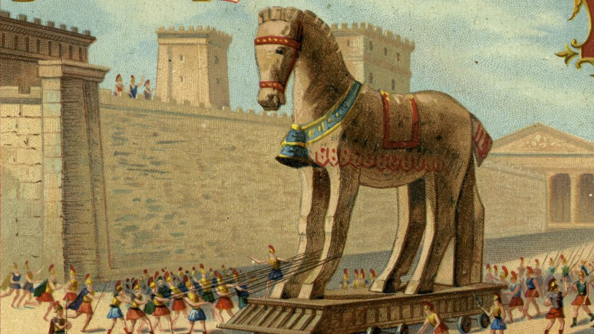
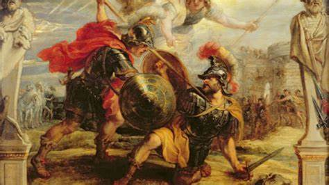

Welcome, brave historian! Explore ancient clues, solve puzzles, and escape the myth and mystery of the Trojan War!
The story of the Trojan War blends myth and reality. According to Greek mythology, the war began when Paris, a Trojan prince, abducted Helen, the wife of Menelaus, king of Sparta. This led to a massive Greek expedition to Troy, which culminated in a ten-year siege. The tale is best known through Homer’s epic poems—the Iliad and Odyssey—written centuries later. While these texts capture the drama, heroism, and divine interventions of the war, historians look for evidence elsewhere. Archaeological digs at Hisarlik in modern Turkey, identified as ancient Troy, reveal layers of destruction around 1200 BCE. This aligns with the period of widespread conflict known as the Bronze Age Collapse, suggesting a historical basis for the myth.
Quick Read: Over time, the myths surrounding the Trojan War grew richer. The most famous is the story of the Trojan Horse—a cunning Greek ploy to infiltrate the city. Legends also describe how gods like Athena, Apollo, and Zeus played major roles in shaping the war’s outcomes. However, archaeological evidence doesn’t support these supernatural claims. Instead, historical references such as Hittite tablets mention a city called Wilusa (likely Troy) and conflicts in the region. The real conflict may have been a struggle for control over trade routes or political power in Anatolia. This puzzle challenges you to separate enduring myths from the facts archaeology and ancient documents reveal.
Quick Read: Understanding the Trojan War means examining both mythological and historical sources. Homer’s Iliad dramatizes a few weeks of the war, focusing on the hero Achilles and the gods’ influence. However, modern scholars use archaeological remains, ancient writings (like Hittite records), and later Greek histories to reconstruct what might have really happened. The discovery of multiple layers of destruction at the Troy site points to a city that was attacked more than once. This has led many historians to believe that the myths reflect a distant memory of real conflicts, though details were exaggerated over time. Now it’s your turn to reflect on the evidence and evaluate what we can truly know about the war.
The Trojan War is made up of many key moments, both mythical and possibly historical. Here are some major events thought to be part of the tale: the judgment of Paris, the abduction of Helen, the Greeks' arrival at Troy, Achilles' battles, the Trojan Horse, and the city's fall. Can you place them in the correct order?
Well done! You've uncovered the truth, challenged myths, and emerged victorious!